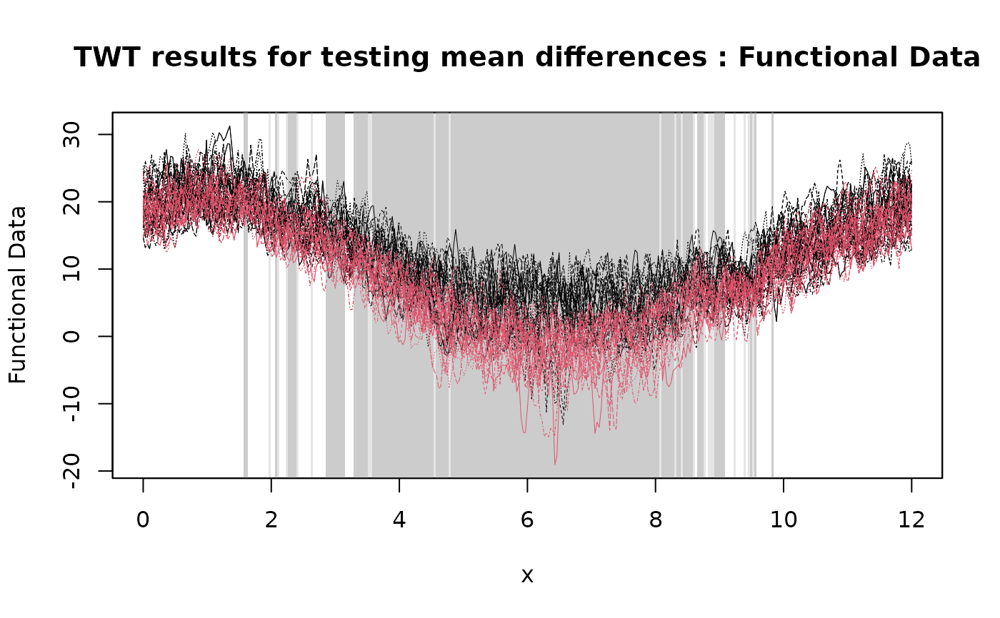
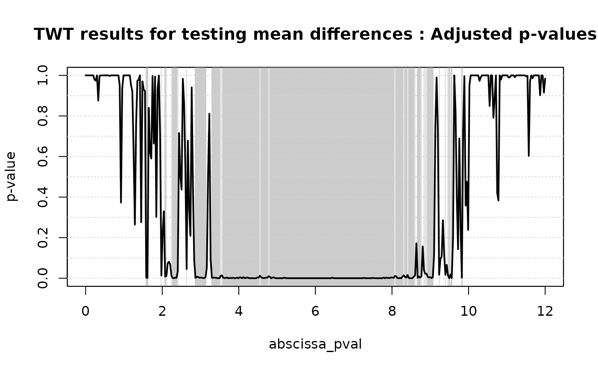

Two population Threshold Wise Testing procedure
TWT2.RdThe function implements the Threshold Wise Testing procedure for testing mean differences between two functional populations. Functional data are tested locally and unadjusted and adjusted p-value functions are provided. The unadjusted p-value function controls the point-wise error rate. The adjusted p-value function controls the family-wise error rate asymptotically.
Arguments
- data1
First population's data. Either pointwise evaluations of the functional data set on a uniform grid, or a
fdobject from the packagefda. If pointwise evaluations are provided,data2is a matrix of dimensionsc(n1,J), withJevaluations on columns andn1units on rows.- data2
Second population's data. Either pointwise evaluations of the functional data set on a uniform grid, or a
fdobject from the packagefda. If pointwise evaluations are provided,data2is a matrix of dimensionsc(n1,J), withJevaluations on columns andn2units on rows.- mu
Functional mean difference under the null hypothesis. Three possibilities are available for
mu: a constant (in this case, a constant function is used); aJ-dimensional vector containing the evaluations on the same grid whichdataare evaluated; afdobject from the packagefdacontaining one function. The default ismu=0.- B
The number of iterations of the MC algorithm to evaluate the p-values of the permutation tests. The defualt is
B=1000.- paired
Flag indicating whether a paired test has to be performed. Default is
FALSE.- dx
Used only if a
fdobject is provided. In this case,dxis the size of the discretization step of the grid used to evaluate functional data. If set toNULL, a grid of size 100 is used. Default isNULL.- alternative
A character string specifying the alternative hypothesis, must be one of "
two.sided" (default), "greater" or "less".
Value
An object of class fdatest2 containing the following components:
test: String vector indicating the type of test performed. In this case equal to"2pop".mu: Evaluation on a grid of the functional mean difference under the null hypothesis (as entered by the user).unadjusted_pval: Evaluation on a grid of the unadjusted p-value function.adjusted_pval: Evaluation on a grid of the adjusted p-value function.data.eval: Evaluation on a grid of the functional data.ord_labels: Vector of labels indicating the group membership ofdata.eval.
References
Abramowicz, K., Pini, A., Schelin, L., Stamm, A., & Vantini, S. (2022). “Domain selection and familywise error rate for functional data: A unified framework. Biometrics 79(2), 1119-1132.
Pini, A., & Vantini, S. (2017). Interval-wise testing for functional data. Journal of Nonparametric Statistics, 29(2), 407-424.
See also
See also plot.fdatest2 for plotting the results.
Examples
# Importing the NASA temperatures data set
data(NASAtemp)
# Performing the TWT for two populations
TWT.result <- TWT2(NASAtemp$paris, NASAtemp$milan)
#> [1] "Threshold-wise tests"
# Plotting the results of the TWT
plot(
TWT.result,
xrange = c(0, 12),
main = 'TWT results for testing mean differences'
)


# Selecting the significant components at 5% level
which(TWT.result$adjusted_pval < 0.05)
#> [1] 49 50 61 64 65 69 70 71 72 73 74 81 88 89 90 91 92 93
#> [19] 94 95 96 101 102 103 104 105 106 107 108 109 110 111 112 113 114 115
#> [37] 116 117 118 119 120 121 122 123 124 125 126 127 128 129 130 131 132 133
#> [55] 134 135 136 137 138 139 140 141 142 143 144 145 146 147 148 149 150 151
#> [73] 152 153 154 155 156 157 158 159 160 161 162 163 164 165 166 167 168 169
#> [91] 170 171 172 173 174 175 176 177 178 179 180 181 182 183 184 185 186 187
#> [109] 188 189 190 191 192 193 194 195 196 197 198 199 200 201 202 203 204 205
#> [127] 206 207 208 209 210 211 212 213 214 215 216 217 218 219 220 221 222 223
#> [145] 224 225 226 227 228 229 230 231 232 233 234 235 236 237 238 239 240 241
#> [163] 242 243 244 245 246 247 248 249 250 251 252 253 254 255 256 257 258 259
#> [181] 260 261 262 264 265 266 267 269 270 271 272 273 274 275 276 281 286 288
#> [199] 289 290 291 299